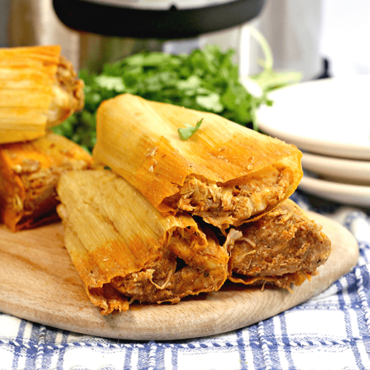

Chicken Tamales

Description
A tamale, in Spanish is a traditional Mesoamerican dish made of masa, a dough made from nixtamalized corn, which is steamed in a corn husk or banana leaves. The wrapping can either be discarded prior to eating or used as a plate. Tamales can be filled with meats, cheeses, fruits, vegetables, herbs, chiles, or any preparation according to taste, and both the filling and the cooking liquid may be seasoned.
Ingredients
- 11 ounces lard, divided
- Salt to taste
- 9 cups masa harina
- 1 cup warm chicken broth, divided
- 3 fresh tomatillos, husks removed
- 1 ancho chile pepper - stems, seeds, and veins removed
- 1 mulato chile pepper - stems, seeds, and veins removed
- 1 clove garlic, minced
- 1 pinch freshly ground black pepper, or to taste
- 1 pinch crushed dried oregano
- 1 pound shredded cooked chicken
- 36 banana leaves, softened
Steps
- Beat 9 ounces lard in a large bowl with an electric mixer until creamy. Add salt and continue beating for a few minutes. Add masa harina and beat well until combined. Add chicken broth, 1/4 cup at a time, beating until masa has a smooth and workable consistency similar to cookie dough, about 3/4 cup total. Test if the masa is ready by dropping a small ball of masa into a glass of cold water; if it floats, it's ready, if not, beat the dough a little longer.
- Combine tomatillos, ancho chile pepper, mulato chile pepper, garlic, salt, pepper, and oregano in a blender; blend until smooth.
- Heat remaining 2 ounces lard in a skillet and cook tomatillo sauce until lightly thickened, 3 to 5 minutes. Add shredded chicken and a little of the remaining chicken broth. Cook over low heat until chicken filling has thickened, about 10 minutes.
- Spread 2 to 3 tablespoons masa mixture onto 1 banana leaf, filling it up to 2 inches from the bottom and 1/4 inch from the top. Add 1 tablespoon of the chicken filling in the center of the masa mixture. Fold sides of banana leaf together, one over the other. Fold the bottom of the banana leaf over the seam of the 2 folded sides and tie together with kitchen string. Repeat with remaining banana leaves.
- Place a steamer insert into a saucepan and fill with water to just below the bottom of the steamer. Bring water to a boil. Add tamales with the open side up and cook until filling is heated through and separates from the leaf, 1 hour 30 minutes to 2 hours. Let tamales rest for 15 minutes before serving.